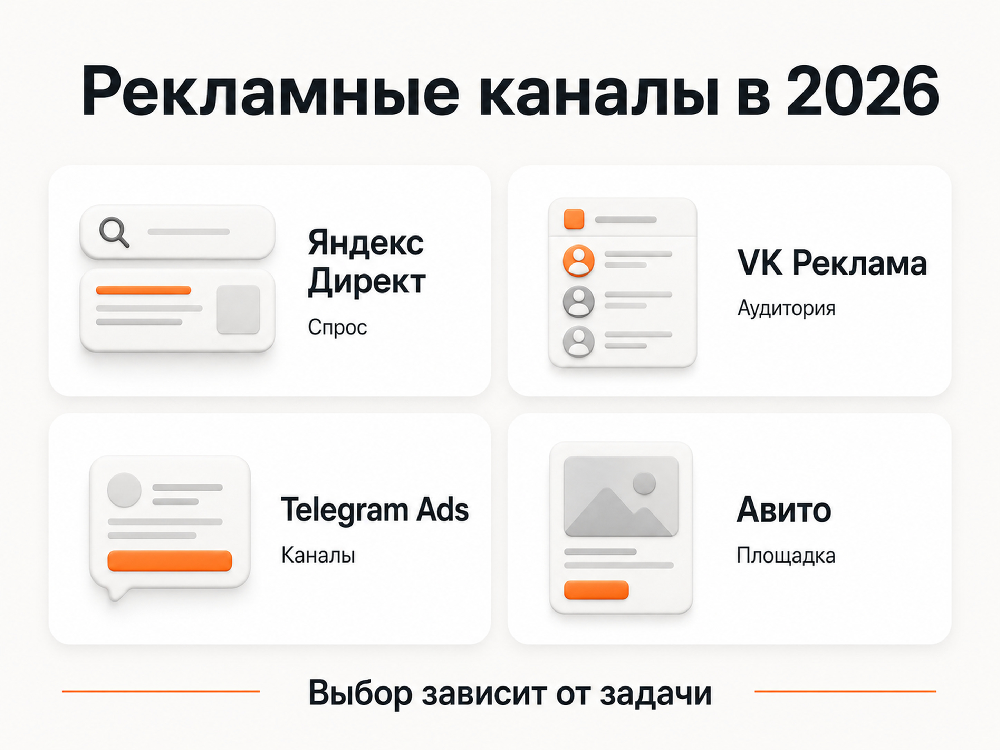
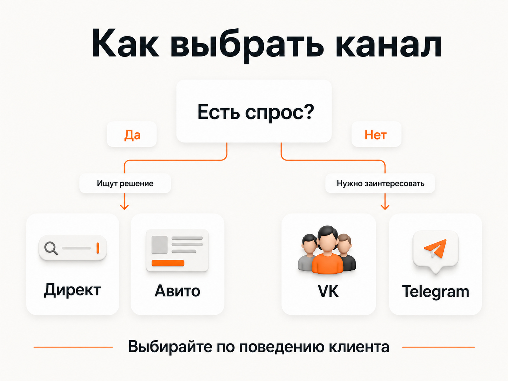

Блог о платном трафике
Контекстная или таргетированная реклама: что выбрать для бизнеса в 2026 году
Если у бизнеса уже есть сформированный спрос и люди сами ищут товар или услугу, я в большинстве случаев начинал бы с контекстной рекламы в Яндекс Директе. Особенно это касается услуг, B2B, строительства, производства, медицины, юридической тематики и других направлений, где клиент приходит с конкретной задачей.
Таргетированная реклама полезнее там, где человека нужно сначала заинтересовать предложением. Например, при продвижении вебинара, онлайн-курса, мероприятия, Telegram-канала или продукта, который хорошо продается через визуальный креатив и относительно короткую воронку.
В России в 2026 году выбор рекламных систем стал заметно меньше. Для контекстной рекламы основным массовым инструментом фактически остается Яндекс Директ. Google по-прежнему приостанавливает показ рекламы пользователям, находящимся в России.
Среди таргетированных каналов в первую очередь имеет смысл рассматривать VK Рекламу и Telegram Ads. Отдельно я бы поставил Авито: формально это уже не классический таргет, но при выборе источника платного трафика площадку обязательно стоит учитывать.
Чем контекстная реклама отличается от таргетированной
Классическая разница достаточно простая.
Контекстная реклама в первую очередь работает от спроса. Человек вводит в Яндексе запрос вроде «ремонт квартир под ключ», «адвокат по банкротству» или «купить промышленный компрессор» и получает рекламное предложение в момент поиска.
Яндекс определяет Директ как систему поисковой и тематической контекстной рекламы. На Поиске ключевые фразы связываются с запросами пользователей, а объявления показываются непосредственно в результатах поиска.
Таргетированная реклама работает иначе. Мы сначала описываем аудиторию через географию, интересы, поведение, сообщества, накопленные данные или другие признаки, после чего показываем ей объявление.
Человек при этом может вообще ничего не искать прямо сейчас.
Например, пользователь смотрит ленту ВКонтакте. Мы предполагаем по его поведению, что ему может быть интересен курс английского языка, и показываем рекламу курса.
Это принципиальная разница:
контекст чаще отвечает на уже существующий спрос;
таргет чаще пытается найти подходящего человека раньше, чем он сам начал активно искать предложение.
Граница между форматами сейчас размыта. В Яндекс Директе есть РСЯ, ретаргетинг и подбор аудитории по множеству сигналов. В VK Рекламе есть таргетинг по ключевым фразам. Поэтому ориентироваться только на термин «контекст» или «таргет» уже неправильно.
Для бизнеса гораздо полезнее другой вопрос: человек уже ищет решение или его еще нужно заинтересовать?

Какие рекламные системы доступны в России в 2026 году
Если говорить именно о массовых каналах привлечения платного трафика на российскую аудиторию, я бы рассматривал четыре основных варианта.
| Канал | Основная механика | Где особенно полезен |
|---|---|---|
| Яндекс Директ | Поисковый спрос + РСЯ и алгоритмический подбор аудитории | Большинство товаров и услуг со сформированным спросом |
| VK Реклама | Интересы, поведение, ключевые фразы, аудитории | Соцсети, инфопродукты, мероприятия, массовый B2C |
| Telegram Ads | Реклама внутри Telegram с выбором тематического окружения и поисковых ключей | Каналы, боты, контентные продукты, некоторые онлайн-услуги |
| Авито | Спрос внутри площадки + отдельный рекламный кабинет | Товары, услуги и ниши с развитым спросом на Авито |
Яндекс Директ
Директ позволяет работать и с Поиском, и с Рекламной сетью Яндекса. Поиск ловит пользователя в момент запроса. РСЯ размещает рекламу на сайтах, приложениях и других площадках и использует интересы, поведение и другие сигналы для подбора аудитории.
Поэтому современный Директ сам по себе закрывает часть задач, которые раньше было принято относить исключительно к таргетированной рекламе.
«Как настроить Яндекс Директ в 2026 году»
VK Реклама
VK Реклама позволяет работать с демографией, интересами, поведением, аудиториями ретаргетинга и ключевыми фразами.
Ключевые фразы делают VK ближе к контекстной рекламе: можно искать аудиторию, которая недавно проявляла интерес к определенной тематике. Но это все равно не то же самое, что реклама непосредственно в поисковой выдаче Яндекса в момент запроса.
Telegram Ads
Официальная платформа Telegram Ads продолжает работать. Telegram позволяет выбирать конкретные каналы для размещения рекламы, а в правилах платформы также предусмотрено размещение по поисковым ключам.
Но в России в 2026 году у Telegram появился отдельный фактор риска. ФАС сообщила о переходном периоде до конца 2026 года, в течение которого меры ответственности за распространение рекламы в Telegram применяться не будут. При этом сама ситуация связана с ограничениями работы платформы и требованиями российского законодательства. Поэтому Telegram я бы сейчас рассматривал с учетом не только маркетинговой эффективности, но и актуального правового статуса канала.
Авито
Авито я бы не называл классической таргетированной рекламой.
Когда человек заходит на Авито и ищет конкретную услугу или товар, по своей логике это намного ближе к работе со сформированным спросом. Пользователь уже находится внутри площадки, где принято выбирать продавцов и исполнителей.
При этом у Авито появился отдельный рекламный кабинет с баннерными и видеокампаниями, а в 2026 году Авито Реклама запустила таргетинг по ключевым словам.
Поэтому в реальном медиаплане Авито вполне можно сравнивать с Директом и VK Рекламой, хотя механика у площадки своя.

Почему для большинства ниш я бы начинал с Яндекс Директа
Главное преимущество контекстной рекламы на Поиске - намерение пользователя уже понятно.
Если человек сам пишет «установить кондиционер Москва», «лечение прикуса цена» или «бухгалтерское сопровождение ООО», нам не приходится угадывать, интересна ли ему эта тема.
Он сам сообщил о потребности.
Именно поэтому контекст обычно проще прогнозировать в нишах со сформированным спросом.
Это не означает, что каждый клик из Директа окажется качественным или что кампания автоматически будет окупаться. Нужно учитывать конкуренцию, сайт, оффер, аналитику, качество заявок и работу отдела продаж.
Но сама отправная точка сильнее: мы работаем с человеком, который уже ищет решение.
В моей практике это особенно заметно в сложных услугах и B2B. Например, для юридических услуг, промышленного оборудования или производства часто намного проще найти клиента по сформированному запросу, чем пытаться точно описать такого человека через его интересы.
Подробнее эту механику я разбираю отдельно в статье «Контекстная реклама для B2B».
Когда таргетированная реклама может быть лучше контекстной
У поиска есть очевидное ограничение: спрос должен существовать.
Нельзя получить много переходов по запросу, который почти никто не вводит.
Допустим, компания придумала новый сервис, о котором рынок еще практически не знает. Пользователь не может искать название решения, если даже не знает, что такое решение существует.
Здесь таргет становится интереснее.
Хорошие сценарии:
- вебинары и бесплатные мероприятия;
- онлайн-курсы;
- образовательные продукты;
- подписка на Telegram-канал;
- продвижение сообществ;
- приложения;
- недорогие массовые продукты;
- продукты, которые хорошо объясняются одним креативом;
- предложения с коротким первым шагом.
Например, бесплатный вебинар по инвестициям проще показать аудитории, интересующейся финансами, чем ждать, когда люди начнут искать конкретное название вебинара в Яндексе.
Таргет также помогает расширить рекламу, когда горячий поисковый спрос уже выбран и бизнесу нужен дополнительный объем.
Почему таргет обычно менее предсказуем для сложных услуг
Представим компанию, которая продает юридический консалтинг бизнесу.
Можно попробовать найти собственников компаний по интересам, должностям, сообществам или поведению. Но сам факт того, что человек является предпринимателем, еще не означает, что именно сегодня ему нужен корпоративный юрист.
В Яндексе ситуация другая.
Запрос «юрист по корпоративному спору» уже говорит о конкретной потребности.
Поэтому для сложных услуг я обычно предпочитаю сначала проверить существующий спрос, а затем расширять охват другими инструментами.
Чем дороже продукт, длиннее цикл сделки и уже аудитория, тем ценнее становится реальное намерение пользователя.
Что выбрать: VK Рекламу или Яндекс Директ
Если услугу или товар активно ищут в Яндексе, первым тестом я бы выбрал Директ.
VK имеет смысл поставить впереди, если предложение лучше продается через интерес и креатив, чем через прямой поиск.
Например:
Стоматология с услугой имплантации
Спрос существует. Люди ищут имплантацию, цены, клиники, врачей. Начать логичнее с Директа.
Бесплатный вебинар для предпринимателей
Такое предложение можно показывать подходящей аудитории напрямую в ленте. Здесь VK может оказаться очень логичным первым тестом.
Новый необычный образовательный продукт
Если люди пока не знают название метода или продукта, поискового спроса может практически не быть. Таргет получает преимущество.
Промышленное оборудование
Часто аудиторию невозможно нормально определить по обычным социальным интересам. Зато закупщик или предприниматель способен ввести совершенно конкретный поисковый запрос. Здесь я бы в первую очередь смотрел в сторону Директа.
Когда выбирать Авито
С Авито правило достаточно простое: сначала нужно проверить, существует ли ваша ниша внутри самой площадки.
Если пользователь привык искать там такой товар или услугу, Авито имеет смысл тестировать.
Например, на площадке хорошо представлено множество бытовых услуг, строительство, ремонт, автомобили, недвижимость, оборудование, товары и специалисты.
Если же вы продаете сложный бизнес-консалтинг и потенциальный клиент в принципе не идет за такой услугой на Авито, сам факт большой аудитории площадки ничего не дает.
Поэтому я бы не выбирал между Авито и Директом по принципу «где дешевле реклама».
Нужно сначала ответить на вопрос: где клиент реально ищет такое предложение?
Контекстная или таргетированная реклама для разных задач
| Задача | С чего я бы начал |
|---|---|
| Срочная услуга | Яндекс Директ |
| Юридические услуги | Яндекс Директ |
| Производство и B2B | Яндекс Директ |
| Интернет-магазин известного товара | Яндекс Директ |
| Онлайн-курс | VK Реклама / Яндекс Директ в зависимости от спроса |
| Бесплатный вебинар | VK Реклама |
| Telegram-канал | Telegram Ads |
| Локальные бытовые услуги | Яндекс Директ + проверка Авито |
| Товары с развитой категорией на Авито | Авито + Яндекс Директ |
| Новый неизвестный рынку продукт | Таргетированная реклама |
| Узкая дорогостоящая услуга | Обычно Яндекс Директ |
Это не рейтинг рекламных систем. У каждой конкретной ниши результат может отличаться.
Можно ли запускать контекстную и таргетированную рекламу одновременно
Да, если бюджет позволяет нормально протестировать оба источника.
Например, Директ собирает пользователей, которые уже ищут услугу, а VK работает с более широкой аудиторией и создает дополнительные касания.
Но я бы не делил небольшой рекламный бюджет между четырьмя площадками только ради присутствия везде.
Лучше полноценно протестировать один наиболее логичный источник, получить достаточный объем данных и только потом расширяться.
Иначе получится несколько рекламных кабинетов, в каждом из которых слишком мало трафика и конверсий для нормальной оценки.
Как выбрать канал для своего бизнеса
Я бы проверял их в таком порядке.
- Есть ли сформированный поисковый спрос?
Если люди уже ищут продукт или услугу, проверить Яндекс Директ.
- Ищут ли такое предложение на Авито?
Если на площадке существует активная категория и много конкурентов, это отдельный сигнал для теста.
- Можно ли достаточно точно определить аудиторию?
Если да, можно проверять VK Рекламу.
- Находится ли аудитория внутри Telegram и подходит ли продукт под формат площадки?
Тогда можно рассматривать Telegram Ads с учетом текущих ограничений и правового статуса рекламы.
- Какой источник дает реальные продажи?
Финальное решение нужно принимать не по CTR и даже не только по стоимости заявки.
Я бы сравнивал минимум:
- стоимость целевого обращения;
- качество лидов;
- конверсию лида в клиента;
- стоимость клиента;
- объем продаж;
- окупаемость рекламы.
Дешевый лид из таргета может оказаться хуже дорогого лида из Поиска, если первый почти никогда не покупает.
«Как оценить эффективность Яндекс Директа»

Что в итоге лучше: контекстная или таргетированная реклама
Для большинства бизнесов со сформированным спросом я бы сначала проверял контекстную рекламу в Яндекс Директе.
Причина простая: рекламодатель получает возможность обратиться к человеку именно тогда, когда тот сам ищет товар или услугу.
Таргетированная реклама становится особенно интересной, когда спрос еще не сформирован, предложение хорошо продается через креатив, аудиторию легко определить или нужно выйти за пределы существующего поискового спроса.
В России в 2026 году практический выбор чаще всего сводится к Яндекс Директу, VK Рекламе, Telegram Ads и Авито. Выбирать между ними стоит не по популярности площадки, а по поведению клиента.
Если человек уже ищет решение - логичнее идти туда, где можно этот спрос поймать.
Если еще не ищет - придется сначала найти самого человека и заинтересовать его предложением.
На главной странице можно посмотреть мои кейсы по Яндекс Директу и другим каналам платного трафика.